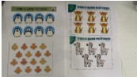
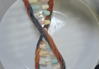
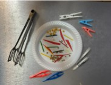
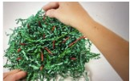
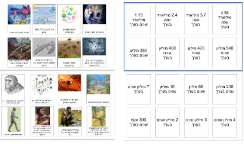
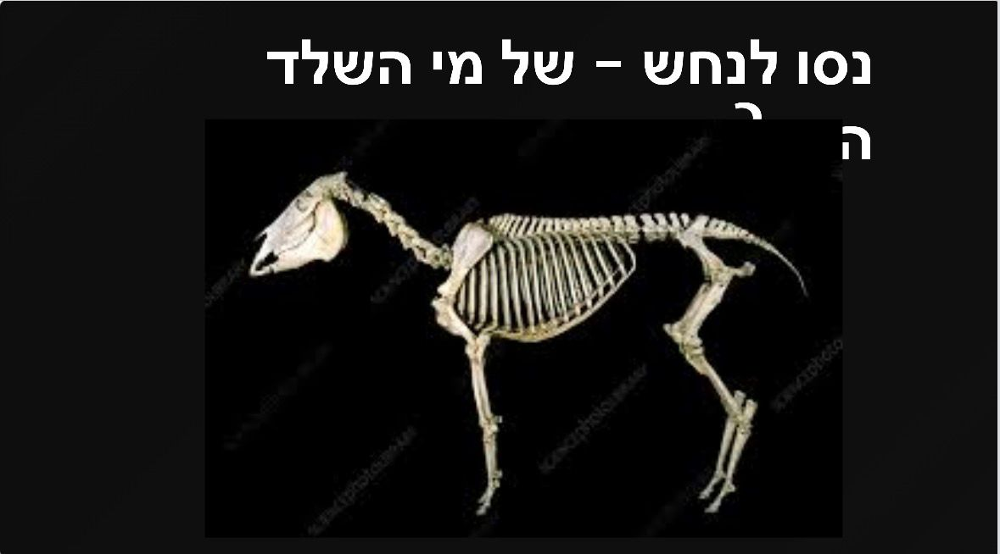

מהלך הפעילות
להלן פעילות בנושא אבולוציה הכוללת שש תחנות
בכל תחנה ישנו דף הסבר קצר ופעילות
הפעילות מתאימה לילדי גן חובה ובית הספר היסודי
פירוט התחנות
-
תחנה ראשונה: אוכלוסייה
הסבר על מהי אוכלוסייה: קבוצת פרטים דומים מאוד אך לא זהים.
הפעילות: מציאת שני פריטים זהים מתוך האוכלוסייה.

-
תחנה שנייה: DNA
הסבר על DNA והכנת DNA מממתקים. הסבר על השוני בין ה DNA-ים השונים שיצאו לילדים והילדות ועל מוטציות.
עבור תחנה זו יש לרכוש את הממתקים (חמצוצים ומיני מרשמלו בארבעה צבעים) וקיסמי שיניים

-
תחנה שלישית: "המתאים שורד"
הסבר על העקרון "המתאים שורד"
הפעילות: לתפוס "אוכל" בעזרת "מקורות" שונים ובדיקה איזה מקור הוא הכי אפקטיבי ביותר ננכידת איזה "אוכל".
רק ציפור עם מקור מתאים תצליח לאכול ולשרוד.
מתקשר למחקר של דארוין על הציפורים באיי גלאפאגוס

-
תחנה רביעית: "הסוואה"
הסבר על העקרון "ההסוואה"
הפעילות: הילדים והילדות יהיו "טורפים" שמנסים "לטרוף" אוכל בתוך סביבה מוסווית.
הסביבה היא נייר גרוס בצבע אחיד
ה"אוכל" הוא מקלות עץ קטנטנים בשני צבעים: צבע אחד הוא באותו הצבע של הנייר הגרוס והשני בצבע בולט
הילדים והילדות צריכים תוך 20 שניות להוציא כמה שיותר מקלות. בתום 20 השניות סופרים כמה מקלות מוסווים הוצאו וכמה בצבע בולט

-
תחנה חמישית: הכרת שלבי האבולוציה
הפעילות: לוטו אבולוציה
בעמדה זו יש לוח וקלפים שמכילים את השלבים השונים באבולוציה, יש להתאים בין הקלפים ללוחות
כיצד ידעו איך לבצע את ההתאמה? על הקיר נתלה תמונות של ההתאמה.
תמונות אלו ישמשו גם כקישוט וגם כרמז לפעילות

-
תחנה שישית: מאובנים
בתחנה זו נתחיל בפעילות ולאחריה נסביר על מאובנים
הפעילות: חידון מקוון דרך הטלפון - זיהוי החיה על פי השלד שלה
המטרה: ההבנה שלא מספיק השלד כדי לדעת בדיוק איך נראית החיה ומכאן הסבר על מאובנים
